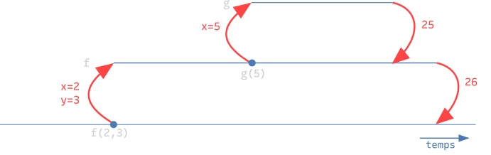
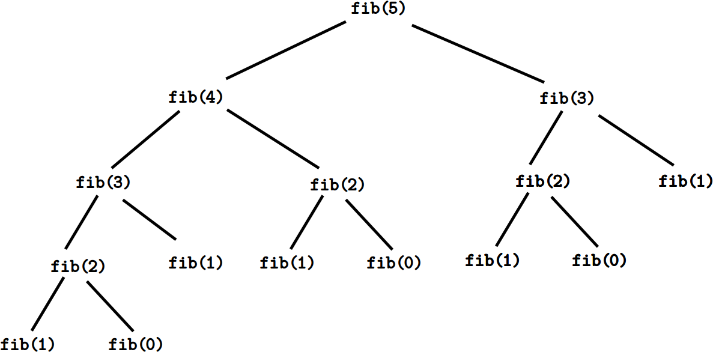

Informatique et Calcul Scientifique
Cours 6
Fonctions récursives
- Une fonction récursive résout un problème en résolvant un ou plusieurs sous-problèmes du même type.
- On écrit alors des fonctions qui s’appellent elles-mêmes.😱
- L’idée est de décomposer le problème en sous-problèmes plus petits, de les résoudre récursivement, puis de combiner leurs solutions pour obtenir la solution du problème original. On parle du paradigme « diviser-pour-régner ».
Fonctions récursives

Exemple 1 de récursion : factorielle
- Pour \(n \in \mathbb{N}\), la factorielle de \(n\) est définie comme
\(n! = n \cdot (n-1) \cdots 2 \cdot 1\) \(\displaystyle {} = \begin{cases} n \cdot (n-1)! &\text{si}~n \geq 1\\ 1 &\text{si}~n = 0\end{cases}\)
- On peut calculer la valeur de \(n!\) à partir de celle de \((n-1)!\), c’est-à-dire ramener la résolution du problème pour l’entrée \(n\) à la résolution du problème pour l’entrée \(n-1\).
Appels de fonctions : visualisation
- Pour comprendre l’exécution d’un programme, il est utile de visualiser les appels de fonctions.
- Chaque appel de fonction est représenté par une ligne horizontale. Un appel imbriqué apparaît au-dessus de l’appelant.

Pour mieux comprendre : Recursion Visualizer, Python tutor.
Factorielle : appels récursifs

Anatomie d’une fonction récursive I
Schématisons la structure d’une fonction récursive (avec un appel récursif).
def fonction(entrée):
if condition du cas de base:
return solution directe
résultat = fonction(entrée plus petite)
return combiner(entrée, résultat)def fact(n):
if n == 0:
return 1
f = fact(n - 1)
return n * fla condition du cas de base le cas de base l’appel récursif
Exemple 2 de récursion : Fibonacci
- Pour \(n \in \mathbb{N}\), le \(n\)ème nombre de Fibonacci est défini comme \[f_n = \begin{cases} f_{n-1} + f_{n-2} &\text{si}~ n \geq 2\\ 1 &\text{si}~ n = 1\\ 0 &\text{si}~ n = 0\end{cases}\]
- On peut ramener la résolution du problème pour l’entrée \(n\) à la résolution du problème pour les entrées \(n-1\) et \(n-2\) :
- En général, une fonction peut effectuer un nombre quelconque d’appels récursifs. Ici, chaque appel de
fiben engendre deux autres (sauf pour les cas de base).
Fibonacci : appels récursifs

Fibonacci : appels récursifs

On peut prouver que pour l’entrée \(n\) le nombre d’appels récursifs de fib est exponentiel en \(n\) (définition formelle dans quelques semaines).
Anatomie d’une fonction récursive II
Une fonction récursive avec deux cas de base et deux appels récursifs :
def fonction(entrée):
if condition du 1er cas de base:
return solution directe 1
if condition du 2e cas de base:
return solution directe 2
a = fonction(entrée plus petite)
b = fonction(autre entrée plus petite)
return combiner(entrée, a, b)def fib(n):
if n == 0:
return 0
if n == 1:
return 1
a = fib(n - 1)
b = fib(n - 2)
return a + bles conditions des cas de base les cas de base les appels récursifs
Remarque. Une fonction récursive peut avoir un nombre quelconque de cas de base et d’appels récursifs.
Somme récursive
On peut distinguer la résolution récursive d’un problème (qui construit la solution à partir de solutions à des sous-problèmes) et la résolution itérative (qui construit graduellement la solution à l’aide de boucles).
Au cours 2, nous avons calculé la somme des nombres de \(1\) à \(n\) avec une boucle. Voici cette fonction itérative, pour un entier \(n\) strictement positif :
Peut-on écrire une fonction récursive somme_rec qui calcule cette même somme ?
Oui, mais il faut d’abord exprimer cette somme de manière récursive.
Somme récursive
Pour \(n\) entier strictement positif, \[\sum_{i=1}^{n} i = \begin{cases} 1 &\text{si}~n = 1\\ \sum_{i=1}^{n-1} i + n &\text{si}~n > 1\end{cases}\] somme_rec(n) doit donc retourner…
- …
1si \(n = 1\) (cas de base), - …
somme_rec(n-1) + nsinon (appel récursif).
Fonctions récursives vs fonctions itératives
- On peut toujours remplacer une fonction récursive par une fonction itérative qui fait le même travail. Alors pourquoi écrire des fonctions récursives ?
- Certains problèmes ont naturellement une structure récursive (ex. calcul de la factorielle) et il est donc plus facile d’y réfléchir récursivement.
- Mais les fonctions récursives sont souvent moins efficaces (cf. Fibonacci)…
Entracte
Exemple de révision : le morpion
Programmons un morpion pour deux joueurs, 'X' et 'O', qui jouent à tour de rôle au clavier. Le premier qui aligne trois symboles gagne.
- Le plateau est un tableau \(3 \times 3\) : une liste de trois lignes, chacune étant une liste de trois cases, qui valent
None(case libre),'X'ou'O'. P[i][j]est la case de la ligneiet de la colonnej.- Nos fonctions marcheront pour un plateau de côté
nquelconque, qu’elles retrouvent avecn = len(P). Ici,n = 3.
Morpion : les fonctions
| Fonction | Rôle | Retourne |
|---|---|---|
transposer(T) |
transpose un tableau (cours 5) | le tableau transposé |
plateau_vide(n) |
crée un plateau \(n \times n\) de cases libres | le plateau |
afficher(P) |
affiche le plateau | rien |
jouer(P, joueur) |
demande une case libre à joueur et y pose son symbole |
rien |
gagnant(P, joueur) |
joueur a-t-il rempli une ligne, une colonne ou une diagonale ? |
un bool |
plein(P) |
toutes les cases sont-elles prises ? | un bool |
Remarque. jouer ne retourne pas un nouveau plateau : elle modifie la liste reçue, que le programme principal désigne lui aussi.
La fonction input
La fonction input permet de demander une valeur à l’utilisateur pendant l’exécution.
input(message)affichemessage, attend que l’utilisateur tape une réponse et appuie sur Entrée, puisreturncette réponse.La valeur retournée est toujours une
str, même si l’utilisateur tape un nombre. Pour calculer avec, il faut la cast :int(input(...))oufloat(input(...)).
Remarque. Si la réponse n’est pas l’écriture d’un nombre, int et float produisent une erreur.
Morpion : la partie
partie(n) crée un plateau de côté n et enchaîne les tours jusqu’à la victoire ou au match nul.
créer un plateau vide, ainsi que les variables joueur et tour
tant que le plateau n'est pas rempli :
afficher le plateau
déterminer le joueur
faire jouer le joueur
si le joueur a gagné : c'est fini (return)
sinon : passer à la prochaine itération
sortir de cette boucle (sans return) signifie un match nul.